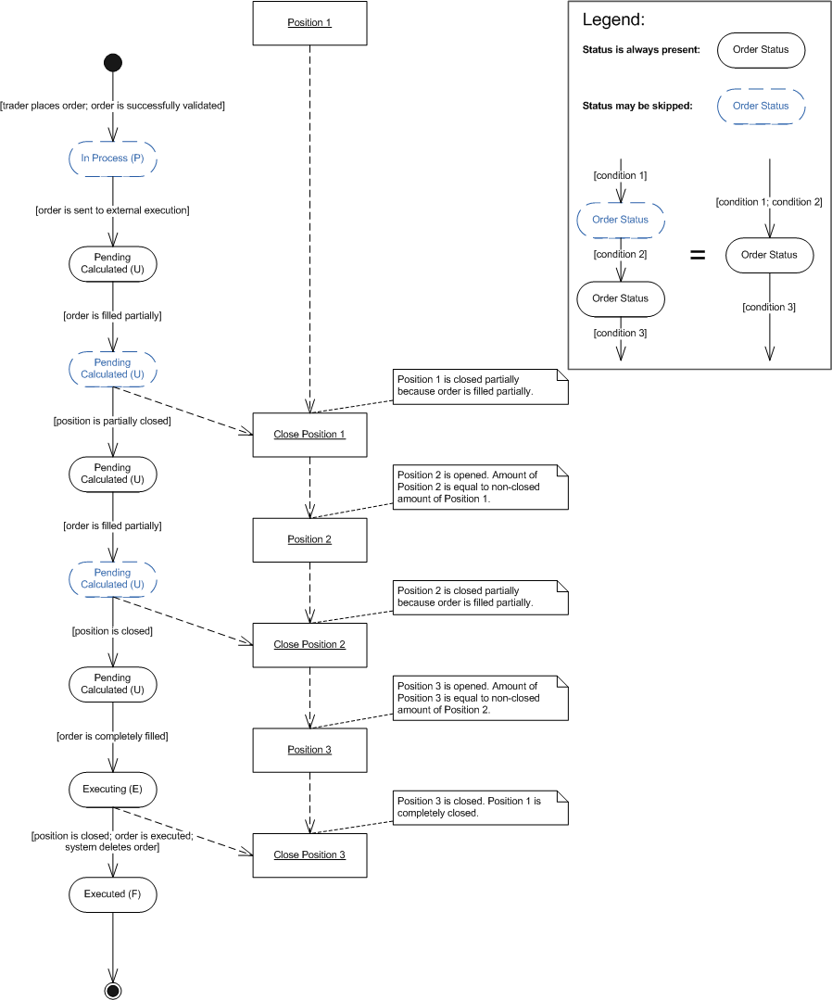

The order closes the position in portions.
An open limit order with IOC time-in-force option is placed to close a position. The order is completely filled in three portions. The first and the second portions close the positions and open a new position with the remaining amount. The last portion closes the position completely.
Scenario Diagram
